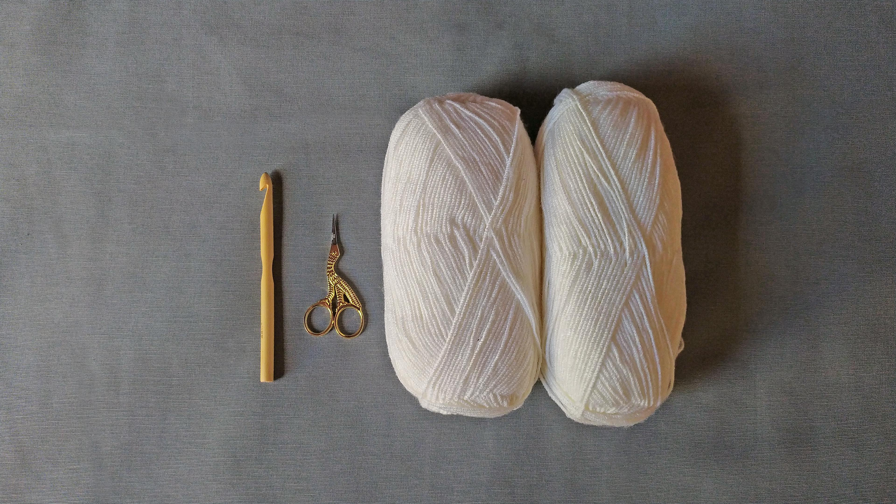
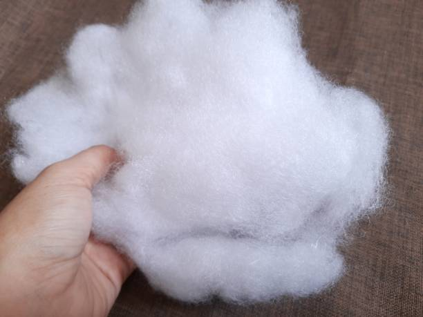

Materials Needed
To start with amigurumi, you'll need the following materials:
- Yarn: Choose a soft yarn in your preferred color(s). Commonly used yarn weights for amigurumi are worsted weight (medium) or DK weight (light).
- Crochet Hook: Select an appropriate crochet hook size based on the yarn weight you've chosen. A size G/4.0mm or H/5.0mm hook is commonly used for worsted weight yarn.
- Scissors: For cutting yarn. 
- Fiberfill: This is used to stuff your amigurumi creations, giving them shape and softness. 
- The following are "nice to have":
- Yarn Needle: You'll need a yarn needle for sewing pieces together and weaving in ends.
- Safety Eyes or Embroidery Thread: Depending on your preference, you can use safety eyes for attaching eyes or embroider eyes using embroidery thread.
- Stitch Marker: Useful for keeping track of rounds in your crochet work. (I usually use a different color yarn)
Understanding Amigurumi Patterns & Learning the Basics
Now that you have all the materials needed you should learn the basic types of stiches that are the most used in Amigurumi.
Amigurumi patterns are typically written using standard crochet pattern notation. Here are some Abbreviations:
- ch: Chain stitch.
- sc: Single crochet.
- inc: Increase (work two single crochet stitches into the same stitch).
- dec: Decrease (decrease two single crochet stitches into one stitch).
- sl st: Slip stitch.
- FO: Fasten off (finish off).
To learn how to preform these stiches watch the following youtube video series (That's how I learned!):